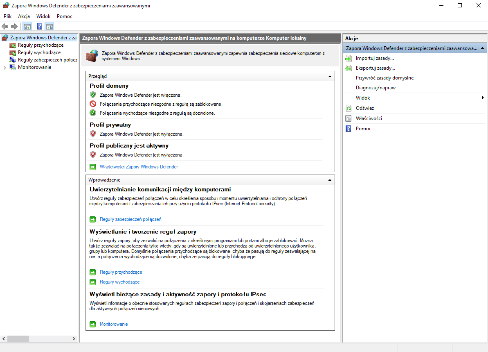
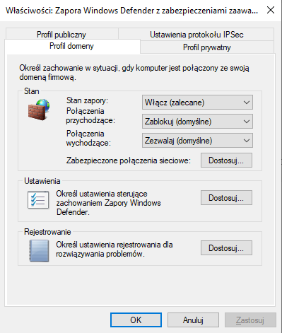

Profile w Zaporze Sieciowej
Jak wiemy, profil to zbiór pewnych atrybutów z danymi wartościami (taka moja prosta definicja). Kojarzymy profil z profilem użytkownika, jednak pamiętajmy, że w Firewallu także są profile, gdzie są ustawione zdefiniowane ustawienia zapory.
W Zaporze Sieciowej istnieją domyślnie 3 profile:
- Domeny - Wykorzystywany, gdy komputer jest połączony z domeną Active Directory, której jest członkiem.
- Prywatny - Wykorzystywany, gdy komputer jest podłączony do prywatnej sieci, chronionej przez bramę lub router
- Publiczny - Wykorzystywany, gdy komputer jest podłączony bezpośrednio do nowej sieci w miejscu publicznym

Profil Publiczny powinien cechować się zaostrzonymi regułami w celu ochrony danych przed nieupoważnionym dostępem. Profil Prywatny nie musi być aż tak restrykcyjny, jak Publiczny
ponieważ zwykle w nim znajdują się komputery sieci lokalnej, a profil może pozwolić na np. współdzielenie plików, zasobów, drukarek, dostępu do urządzeń itd.
Profile są przypisywane w kolejności: Publiczny, Prywatny, Domeny. A jak on jest ustalany?
- Jeśli wszystkie interfejsy zostaną przypisane do kontrolera domeny odpowiadającej danemu komputerowi -> Profil Domeny
- Jeśli wszystkie interfejsy zostaną przypisane do kontrolera domeny lub są połączone z sieciami zaklasyfikowanymi jako prywatne -> Profil Prywatny
- W innych przypadkach -> Profil Publiczny
Domyślnie, zablokowany jest przesył większości pakietów z wyjątkiem podstawowej komunikacji w sieci.
W profilu prywatnym dozwolona jest komunikacja związana z udostępnianiem plików i drukarek, odkrywaniem urządzeń sieciowych i pomocą zdalną. Ponadto używa połączeń wychodzących.

Powyżej widzimy okno właściwości zapory. Dla każdego z 3 widocznych w zakładkach profili możemy ustawić:
- Stan Zapory - Czy ma być włączona, czy wyłączona zapora
- Połączenia przychodzące:
- Zablokuj - Blokuje połączenia niespełniające wymogów zdefiniowanych w aktywnych regułach zapory
- Zablokuj Wszystkie Połączenia - Ignoruje reguły i blokuje wszystkie połączenia przychodzące
- Zezwalaj - Zezwala na połączenia przychodzące, niespełniające wymogów zdefiniowanych w aktywnych regułach zapory
- Połączenia wychodzące:
- Zezwalaj - Zapora zezwala na nawiązywanie połączeń niespełniających wymogów zdefiniowanych w aktywnych regułach zapory.
- Zablokuj - Zapora blokuje połączenia wychodzące, które nie spełniają wymogów zdefiniowanych w aktywnych regułach zapory.